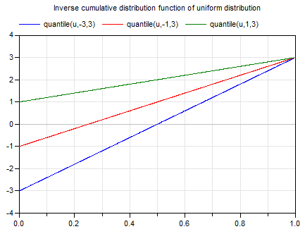

quantileQuantile of uniform distribution |
|
Information
This information is part of the Modelica Standard Library maintained by the Modelica Association.
Syntax
Uniform.quantile(u, y_min=0, y_max=1);
Description
This function computes the inverse cumulative distribution function (= quantile) according to a uniform distribution in a band. Input argument u must be in the range:
0 ≤ u ≤ 1
The returned number y is in the range:
y_min ≤ y ≤ y_max
Plot of the function:

For more details, see Wikipedia.
Example
quantile(0.5) // = 0.5 quantile(0.5,-1,1) // = 0
See also
Syntax
y = quantile(u, y_min, y_max)
Inputs (3)
| u |
Type: Real Description: Random number in the range 0 <= u <= 1 |
|---|---|
| y_min |
Default Value: 0 Type: Real Description: Lower limit of y |
| y_max |
Default Value: 1 Type: Real Description: Upper limit of y |
Outputs (1)
| y |
Type: Real Description: Random number u transformed according to the given distribution |
|---|